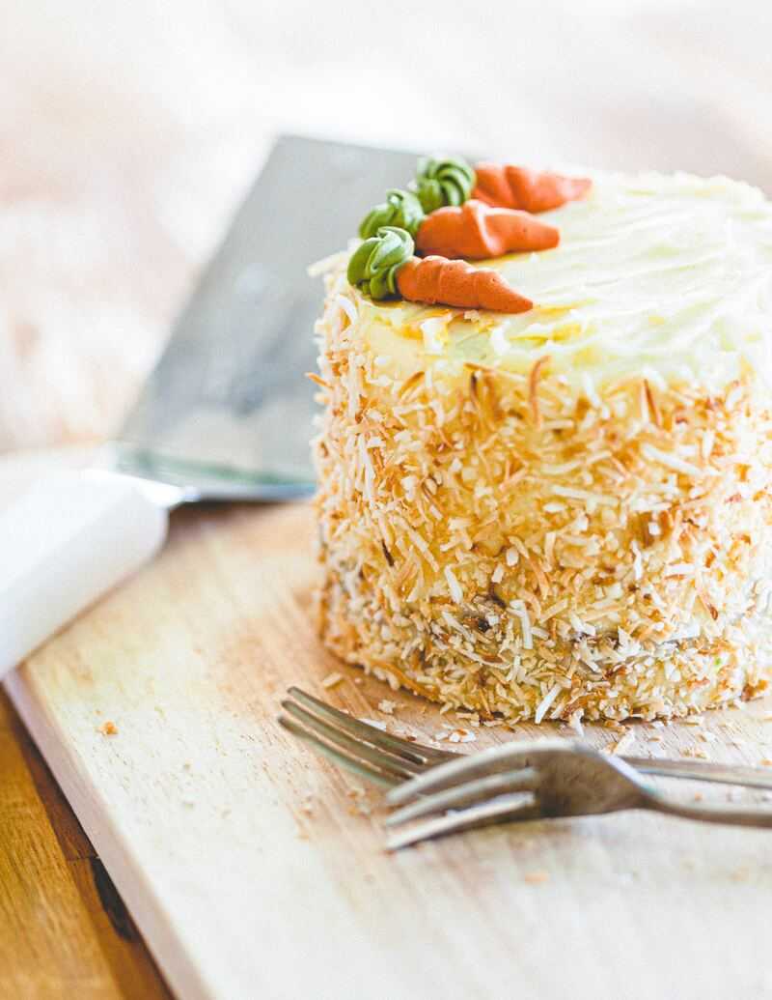
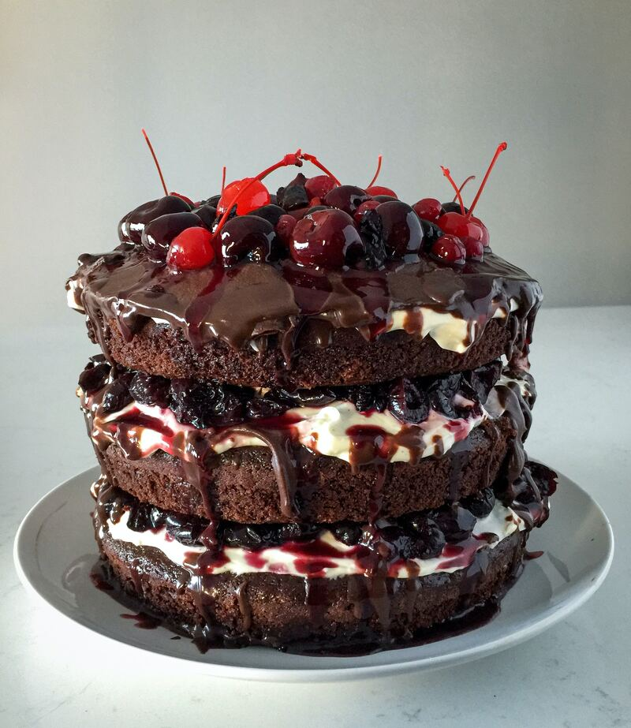
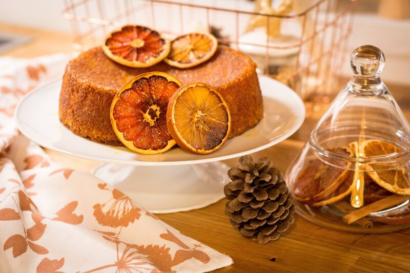

Bolo de coco
O coco é um ingrediente versátil, uma textura macia e úmida ao bolo, enquanto sua fragrância inconfundível enche a cozinha com um
aroma que desperta os sentidos. Prepare-se para se deliciar com um bolo tão simples quanto encantador, perfeito para acompanhar um chá da
tarde em família ou surpreender seus convidados com uma sobremesa irresistível. O preço de um bolo de coco é de $35, então além de poder
apreciar essa delícia você ainda pode fazer uma boa renda extra!
Ingredientes
- 3 ovos
- 1 xícara de açúcar
- 1/2 xícara de óleo
- 1 xícara de leite de coco
- 2 xícaras de farinha de trigo
- 1 colher de sopa de fermento em pó
- 1/2 xícara de coco ralado(fresco ou seco)
Modo de preparo
- Pré-aqueça o forno a 180°C (350°F) e unte uma forma redonda de aproximadamente 24cm de diâmetro com manteiga e farinha de trigo
- Em uma tigela grande, bata os ovos e o açúcar até obter uma mistura leve e fofa. Adicione o óleo vegetal e o leite de coco à mistura de ovos e açúcar, e misture bem até ficar homogêneo.
- Acrescente a farinha de trigo peneirada e o fermento em pó à mistura líquida. Mexa delicadamente até que todos os ingredientes estejam incorporados, sem bater demais a massa.
- Adicione o coco ralado à massa e misture suavemente até ficar uniforme
- Despeje a massa na forma preparada e leve ao forno por aproximadamente 35 a 40 minutos, ou até que o bolo esteja dourado e firme ao toque.
- Retire o bolo do forno e deixe esfriar na forma por alguns minutos. Em seguida, desenforme-o e coloque-o em um prato de servir.
Dicas
- Para intensificar o sabor do coco, você pode adicionar algumas gotas de essência de coco à massa.
- Caso utilize coco ralado seco, você pode deixá-lo de molho no leite de coco por alguns minutos antes de incorporar à massa. Isso garantirá que o coco fique bem hidratado e saboroso.
- Se preferir uma cobertura, você pode fazer um glacê de açúcar de confeiteiro com leite de coco e regar o bolo ainda quente. Polvilhe um pouco mais de coco ralado por cima para enriquecer a apresentação
- Lembre-se de que o tempo de forno pode variar de acordo com cada forno. Faça o teste do palito: ao espetá-lo no centro do bolo, ele deve sair limpo ou com algumas migalhas úmidas.
- Para conservar o bolo fresco por mais tempo, armazene-o em um recipiente bem fechado ou embrulhado em filme plástico
Bolo de Chocolate
O bolo de chocolate é uma das sobremesas mais amadas em todo o mundo, e com razão. Sua massa úmida e fofa, combinada com uma cobertura sedosa de chocolate, cria uma combinação irresistível que derrete na boca. Seja para celebrar um aniversário, um encontro em família ou apenas para satisfazer um desejo de doçura, este bolo é a escolha perfeita para todos os chocólatras de plantão.
Ingrediente
- 2 xícaras de farinha de trigo peneirada
- 1 xícara de cacau em pó (sem açúcar)
- 2 xícaras de açúcar
- 1 colher de sopa de fermento em pó
- 1 colher de chá de bicarbonato de sódio
- 1 colher de chá de sal
- 2 ovos
- 1 xícara de leite
- 1/2 xícara de óleo vegetal
- 2 colheres de chá de extrato de baunilha
- 1 xícara de água fervente
Ingredientes para a Cobertura de Chocolate
- 1 xícara de creme de leite fresco
- 200g de chocolate meio amargo picado
- 2 colheres de sopa de manteiga sem sal
Modo de preparo
- Preaqueça o forno a 180°C (350°F). Unte uma forma redonda de aproximadamente 24cm de diâmetro com manteiga e cacau em pó, para evitar que o bolo grude.
- Em uma tigela grande, misture a farinha de trigo, o cacau em pó, o açúcar, o fermento em pó, o bicarbonato de sódio e o sal. Reserve.
- Em outra tigela, bata os ovos com o leite, o óleo vegetal e o extrato de baunilha até obter uma mistura homogênea.
- Adicione os ingredientes líquidos aos secos e mexa bem até a massa ficar lisa e uniforme.
- Acrescente a água fervente à massa, mexendo cuidadosamente até que esteja bem incorporada.
- Despeje a massa na forma preparada e leve ao forno por aproximadamente 35 a 40 minutos, ou até que o bolo esteja firme ao toque.
- Prepare a cobertura de chocolate enquanto o bolo assa. Em uma panela, derreta o chocolate em fogo baixo, adicionando o creme de leite e a manteiga. Mexa até obter uma mistura cremosa e homogênea.
- Retire o bolo do forno e deixe esfriar na forma por alguns minutos. Em seguida, desenforme-o e coloque-o em um prato de servir.
- Cubra o bolo com a deliciosa cobertura de chocolate, espalhando-a de maneira uniforme por toda a superfície.
Dicas
- Para intensificar o sabor de chocolate do bolo, você pode adicionar 1/2 xícara de gotas de chocolate à massa antes de assar.
- Se preferir uma cobertura mais firme, leve-a à geladeira por alguns minutos antes de espalhá-la sobre o bolo
- Para uma apresentação mais sofisticada, decore o bolo com raspas de chocolate ou pó de cacau peneirado por cima da cobertura.
- Armazene o bolo em um recipiente bem fechado para mantê-lo fresco e saboroso por mais tempo. Se sobrar, é claro!
Bolo de Laranja com Calda de Caramelo
O Bolo de Laranja com Calda de Caramelo é a combinação perfeita entre o cítrico e o doce, criando uma experiência gastronômica sofisticada com uma pitada de aconchego. Com ingredientes simples e fáceis de encontrar, essa receita vai te surpreender e conquistar um lugar especial em seu coração.
Ingredientes
- 3 ovos
- 1 xícara de açúcar
- 1/2 xícara de óleo vegetal
- Suco e raspas de 2 laranjas
- 2 xícaras de farinha de trigo
- 1 colher de sopa de fermento em pó
- 1 pitada de sal
Ingredientes para a Calda de Caramelo
- 1 xícara de açúcar
- 1/2 xícara de água quente
Modo de preparo
- Preaqueça o forno a 180°C (350°F). Unte uma forma redonda de aproximadamente 24cm de diâmetro com manteiga e farinha de trigo.
- Em uma tigela, bata os ovos com o açúcar até obter uma mistura clara e fofa.
- Adicione o óleo vegetal, o suco e as raspas das laranjas à mistura de ovos e açúcar. Mexa bem até ficar homogêneo.
- Acrescente a farinha de trigo peneirada, o fermento em pó e o sal à mistura líquida. Mexa delicadamente até que todos os ingredientes estejam incorporados, sem bater demais a massa
- Despeje a massa na forma preparada e leve ao forno por aproximadamente 35 a 40 minutos, ou até que o bolo esteja dourado e firme ao toque.
- Enquanto o bolo assa, prepare a calda de caramelo. Em uma panela, derreta o açúcar em fogo baixo, mexendo sempre até que se torne um caramelo dourado
- Com cuidado, adicione a água quente ao caramelo derretido, mexendo vigorosamente para que se forme uma calda lisa e brilhante. Reserve.
- Retire o bolo do forno e deixe esfriar na forma por alguns minutos. Em seguida, desenforme-o e coloque-o em um prato de servir.
- Regue o bolo com a calda de caramelo, deixando-a escorrer pelas laterais, criando um efeito caramelizado irresistível.
Dicas
- Regue o bolo com a calda de caramelo, deixando-a escorrer pelas laterais, criando um efeito caramelizado irresistível
- Para deixar o bolo ainda mais perfumado, você pode adicionar uma pitada de canela em pó à massa antes de assar.
- A calda de caramelo também combina muito bem com sorvetes ou outras sobremesas.
- Guarde o que sobrar em um pote bem fechado na geladeira e utilize em outras preparações.
- Antes de desenformar o bolo, deixe-o esfriar por alguns minutos na forma. Isso ajudará a desenformá-lo com mais facilidade e a manter a integridade da calda.
Confira abaixo a tabela nutricional
| Bolo | Peso | Valor energético | sódio | vitamina C | cálcio |
|---|---|---|---|---|---|
| Coco | 402g | 1200 calorias | 23 mg | 8 mg | 110mg |
| Chocolate | 450g | 1500 calorias | 15 mg | 6 mg | 140 mg |
| Laranja | 420g | 1350 calorias | 11 mg | 4 mg | 110 mg |
Confira também algumas receitas em: receitasnestle.com